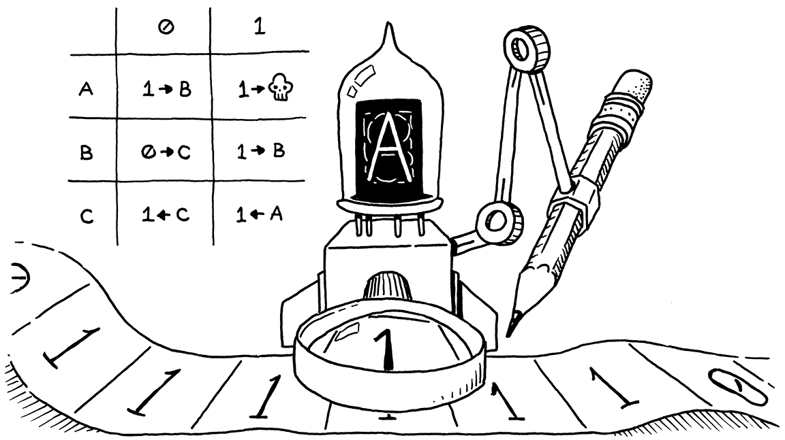
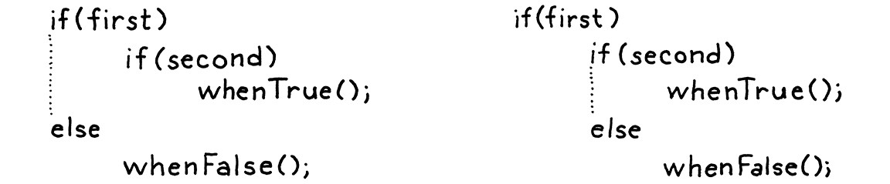

控制流
逻辑这东西，跟威士忌一样，一贪杯就没了益处。
爱德华·约翰·莫顿·德拉克斯·普伦基特，邓萨尼勋爵
跟上一章那场苦熬人的马拉松比起来，今天不过是在雏菊遍野的草地上轻松撒个欢。可这活儿虽 容易，回报却大得惊人。
眼下，我们的解释器还不比一个计算器强多少。一个 Lox 程序在跑完之前只能做有限的工作。想让它跑的时间 翻倍，你就得把源码的长度也翻倍。我们马上就要修好这一点。在这一章里，我们的解释器朝着编程语言的甲级 联赛迈出一大步：图灵完备。
9 . 1图灵机（简述）
上世纪早些时候，数学家们一头撞进了一连串令人困惑的悖论，这些悖论让他们 开始怀疑自己立起的那座地基到底稳不稳。为了应对那场危机，他们退回到原点。从寥寥几条公理、 逻辑和集合论出发，他们希望在坚不可摧的地基之上重建数学。
他们想要严谨地回答这样一些问题：「所有为真的命题都能被证明吗？」「我们能计算所有我们能 定义的函数吗？」乃至那个更一般的问题：「当我们声称一个函数『可计算』时，我们到底是什么意思？」
他们本以为前两个问题的答案会是「是」。剩下的只是去证明它。结果发现，这两者的答案都是「否」；而且 令人惊讶的是，这两个问题深深地纠缠在一起。这是数学里一个迷人的角落，它触及关于大脑能做什么、宇宙 如何运转的根本问题。我没法在这里把它讲透。
我真正想点出的是：在证明前两个问题答案为「否」的过程中，阿兰·图灵和阿隆佐·邱奇为最后一个问题设计出 了一个精确的答案——一个关于哪些函数是可计算的定义。他们各自精心搭建 了一个极小的系统，用最少的机械，却仍然强大到能计算（非常）庞大的一类函数中的任何一个。
这些如今被认为是「可计算函数」。图灵的系统叫做图灵机。邱奇的则是 lambda 演算。两者至今仍被广泛用作计算模型的基础；事实上，许多现代函数式编程语言的核心都用到了 lambda 演算。

图灵机的名气更大——目前还没有关于阿隆佐·邱奇的好莱坞电影——但这两个形式体系在表达能力上是等价 的。事实上，任何一门具备最低限度表达能力的编程语言，都强大到足以计算任何可计算函数。
你可以这样来证明：用你的语言写一个图灵机模拟器。既然图灵证明了他的机器能计算任何可计算函数，那么 推而广之，也就意味着你的语言也能。你要做的，就是把那个函数翻译成一台图灵机，然后在你的模拟器上把它 跑起来。
如果你的语言表达能力强到能做这件事，它就被认为是图灵完备的。图灵机其实相当简单，所以要做到这 一点并不需要多少算力。你基本上只需要算术、一点点控制流，以及分配和使用（理论上）任意大小内存的能力。 第一条我们已经有了。本章结束时，我们会拿到第二条。
9 . 2条件执行
历史讲够了，来给我们的语言添点花样吧。控制流大致可以分成两类：
-
条件控制流，也叫分支控制流，用来不执行某一段代码。从命令式的角度，你可以把它想成 向前跳过一段代码区域。
-
循环控制流会把一段代码执行不止一次。它跳回去，好让你再做一遍某件事。由于你通常并不想要 无限循环，它一般还带有一些条件逻辑，来判断该何时停止循环。
分支更简单，所以我们从它开始。从 C 派生的语言有两个主要的条件执行特性：if 语句，以及那个名字起得
相当有见地的「条件」运算符（?:）。if 语句让你有条件地执行语句，条件
运算符则让你有条件地执行表达式。
为了简单起见，Lox 没有条件运算符，所以我们就直接上 if 语句吧。我们的语句文法多了一条产生式。
statement → exprStmt | ifStmt | printStmt | block ; ifStmt → "if" "(" expression ")" statement ( "else" statement )? ;
一条 if 语句有一个表示条件的表达式，然后是一条在条件为真值时执行的语句。可选地，它还可以有一个
else 关键字，以及一条在条件为假值时执行的语句。语法树节点为这三部分各
有一个字段。
"Expression : Expr expression",
在 main() 内
"If : Expr condition, Stmt thenBranch," + " Stmt elseBranch",
"Print : Expr expression",
跟其他语句一样，语法解析器靠领头的 if 关键字认出 if 语句。
private Stmt statement() {
在 statement() 内
if (match(IF)) return ifStatement();
if (match(PRINT)) return printStatement();
当它找到一个时，就调用下面这个新方法来解析剩下的部分：
加在 statement() 之后
private Stmt ifStatement() { consume(LEFT_PAREN, "Expect '(' after 'if'."); Expr condition = expression(); consume(RIGHT_PAREN, "Expect ')' after if condition."); Stmt thenBranch = statement(); Stmt elseBranch = null; if (match(ELSE)) { elseBranch = statement(); } return new Stmt.If(condition, thenBranch, elseBranch); }
一如往常，解析代码紧贴着文法。它靠查找前面的 else 关键字来侦测 else 子句。如果没有，语法树里的
elseBranch 字段就是 null。
那个看似无害的可选 else，其实在我们的文法里开了一个歧义的口子。考虑：
if (first) if (second) whenTrue(); else whenFalse();
谜题在此：那个 else 子句属于哪一个 if 语句？这不只是一个关于我们如何给文法词法单元的纯理论问题。它
实际上会影响代码怎么执行：
-
如果我们把 else 挂到第一个
if语句上，那么只要first为假值，就会调用whenFalse()，不管second是什么值。 -
如果我们把它挂到第二个
if语句上，那么只有当first为真值且second为假值时，才会调用whenFalse()。
由于 else 子句是可选的，又没有显式的分隔符标记 if 语句的结尾，所以当你这样嵌套 if 时，文法就是
有歧义的。语法里这个经典的陷阱叫做 dangling else 问题。

确实可以定义一套直接避开这个歧义的上下文无关文法，但那需要把大多数语句规则劈成一对一对：一个
允许带 else 的 if，一个不允许。挺烦人的。
于是，大多数语言和解析器都用一种临时凑合的办法绕开这个问题。不管它们用什么花招脱困，选的都是同一种
解读——else 绑定到它前面最近的那个 if。
我们的语法解析器正好已经是这么做的。由于 ifStatement() 会在返回之前急切地查找 else，在一串嵌套
调用里，最内层的那次调用会在返回给外层 if 语句之前，抢先把这个 else 子句据为己有。
语法到手，可以解释了。
加在 visitExpressionStmt() 之后
@Override public Void visitIfStmt(Stmt.If stmt) { if (isTruthy(evaluate(stmt.condition))) { execute(stmt.thenBranch); } else if (stmt.elseBranch != null) { execute(stmt.elseBranch); } return null; }
解释器里的实现不过是套在同名 Java 代码外面的一层薄壳。它给条件求值。如果为真值，就执行 then 分支。 否则，如果有 else 分支，就执行那个。
把这段代码跟我们已实现的其他语法在解释器里的处理方式比一比，控制流之所以特别，就在于那条 Java 的
if 语句。大多数其他语法树总是会求值它们的子树。而在这里，我们可能不求值 then 或 else 语句。如果这
两者中有一个带副作用，那么「选择不求值它」这件事就会变得对用户可见。
9 . 3逻辑运算符
既然我们没有条件运算符，你可能以为分支这块就完事了，然而并没有。就算没有三目运算符，还有另外两个
运算符在严格意义上也是控制流构件——逻辑运算符 and 和 or。
它们不像别的二元运算符，因为它们会短路。如果在求值完左操作数之后，我们就已经知道这个逻辑表达式的 结果必然是什么，那就不去求值右操作数。比如：
false and sideEffect();
要让一个 and 表达式求值出真值，两个操作数都必须为真值。我们刚求值完左边那个 false 操作数，就能
看出这不会成立，所以没必要再去求值 sideEffect()，它就被跳过了。
这就是当初我们没有把逻辑运算符跟其他二元运算符一起实现的原因。现在我们准备好了。这两个新运算符在优先
级表里位置很低。跟 C 里的 || 和 && 类似，它们各有自己的优先级，其中
or 比 and 低。我们把它俩恰好插在 assignment 和 equality 之间。
expression → assignment ; assignment → IDENTIFIER "=" assignment | logic_or ; logic_or → logic_and ( "or" logic_and )* ; logic_and → equality ( "and" equality )* ;
assignment 现在不再兜底到 equality，而是往下接到 logic_or。两条新规则 logic_or 和
logic_and，跟其他二元运算符类似。接着 logic_and 把求操作数的活儿交给
equality，于是我们又链回了表达式规则剩下的部分。
我们本可以为这两个新表达式复用现有的 Expr.Binary 类，毕竟字段是一样的。但那样一来，visitBinaryExpr()
就得检查这个运算符是不是逻辑运算符之一，然后走另一条代码路径来处理短路。我觉得为这两个运算符定义
新类更干净——它们就能有各自的 visit 方法。
"Literal : Object value",
在 main() 内
"Logical : Expr left, Token operator, Expr right",
"Unary : Token operator, Expr right",
要把这些新表达式织进语法解析器，我们先把赋值的解析代码改成调用 or()。
private Expr assignment() {
在 assignment() 内
替换 1 行
Expr expr = or();
if (match(EQUAL)) {
解析一串 or 表达式的代码，跟其他二元运算符如出一辙。
加在 assignment() 之后
private Expr or() { Expr expr = and(); while (match(OR)) { Token operator = previous(); Expr right = and(); expr = new Expr.Logical(expr, operator, right); } return expr; }
它的操作数是下一个更高优先级的层级——新的 and 表达式。
加在 or() 之后
private Expr and() { Expr expr = equality(); while (match(AND)) { Token operator = previous(); Expr right = equality(); expr = new Expr.Logical(expr, operator, right); } return expr; }
它把求操作数的活儿交给 equality()，至此，整个表达式解析器又全都串接回一起了。可以解释了。
加在 visitLiteralExpr() 之后
@Override public Object visitLogicalExpr(Expr.Logical expr) { Object left = evaluate(expr.left); if (expr.operator.type == TokenType.OR) { if (isTruthy(left)) return left; } else { if (!isTruthy(left)) return left; } return evaluate(expr.right); }
把它跟前面那一章的 visitBinaryExpr() 方法比一比，你就能看出区别。这里，我们先求值
左操作数。我们看它的值，判断能不能短路。如果不能——也只有在这种情况下——我们才去求值右操作数。
这里另一个有意思的地方，是决定该返回什么实际的值。由于 Lox 是动态类型的，我们允许任意类型的操作数，
并用真值性来判断每个操作数代表什么。我们对结果也采取类似的思路。逻辑运算符并不承诺字面返回 true 或
false，它只保证会返回一个具有恰当真值性的值。
幸运的是，手边就有带恰当真值性的值——操作数本身求出来的结果。所以我们就用它们。比如：
print "hi" or 2; // "hi". print nil or "yes"; // "yes".
第一行里，"hi" 为真值，所以 or 短路，把它返回。第二行里，nil 为假值，于是求值并返回第二个
操作数 "yes"。
这就把 Lox 里所有分支原语都讲完了。我们准备好「向前跳」到循环了。你看出我刚才干了什么吗？向前。 跳。 懂了吗？你看，这就像在影射……哦，算了。
9 . 4while 循环
Lox 有两种循环控制流语句：while 和 for。while 循环更简单，所以我们从它开始。它的文法跟 C 里
一样。
statement → exprStmt | ifStmt | printStmt | whileStmt | block ; whileStmt → "while" "(" expression ")" statement ;
我们给语句规则再加一个分支，指向 while 的新规则。它先取一个 while 关键字，接着是一个带括号的条件
表达式，然后是一条作为循环体的语句。这条新的文法规则得到一个语法树节点。
"Print : Expr expression",
"Var : Token name, Expr initializer",
在 main() 内
在上一行末尾加 “,”
"While : Expr condition, Stmt body"
));
这个节点存下条件和循环体。从这里你能看出，为表达式和语句准备各自独立的基类有多好。字段声明清楚地 表明：条件是一个表达式，而循环体是一条语句。
到了语法解析器这边，我们沿用处理 if 语句时一样的流程。首先，我们在 statement() 里再加一个分支，
用来侦测并匹配领头的关键字。
if (match(PRINT)) return printStatement();
在 statement() 内
if (match(WHILE)) return whileStatement();
if (match(LEFT_BRACE)) return new Stmt.Block(block());
真正的工作交给下面这个方法：
加在 varDeclaration() 之后
private Stmt whileStatement() { consume(LEFT_PAREN, "Expect '(' after 'while'."); Expr condition = expression(); consume(RIGHT_PAREN, "Expect ')' after condition."); Stmt body = statement(); return new Stmt.While(condition, body); }
这条文法简单到家，这段代码就是把它直译成 Java。说到直译成 Java，下面是我们怎么执行这套新语法：
加在 visitVarStmt() 之后
@Override public Void visitWhileStmt(Stmt.While stmt) { while (isTruthy(evaluate(stmt.condition))) { execute(stmt.body); } return null; }
跟 if 的 visit 方法一样，这个访问者用到了对应的 Java 特性。这个方法并不复杂，却让 Lox 强大得多。
我们终于能写出一个运行时间不再严格受源码长度约束的程序了。
9 . 5for 循环
我们来到最后一个控制流构件——古早的 C 风格 for 循环。我大概不用提醒你它
长什么样，不过还是给出来：
for (var i = 0; i < 10; i = i + 1) print i;
用文法话来说就是：
statement → exprStmt | forStmt | ifStmt | printStmt | whileStmt | block ; forStmt → "for" "(" ( varDecl | exprStmt | ";" ) expression? ";" expression? ")" statement ;
圆括号里面有三个子句，用分号隔开：
-
第一个子句是初始化器。它只执行一次，且在任何别的东西之前。它通常是一个表达式，但为了方便， 我们也允许变量声明。在这种情况下，这个变量的作用域延伸到
for循环的其余部分——另外两个子句和 循环体。 -
接下来是条件。跟
while循环一样，这个表达式控制何时退出循环。它在每一轮迭代开头求值一次， 包括第一轮。如果结果为真值，就执行循环体。否则，就退出。 -
最后一个子句是增量。它是一个任意表达式，在每一轮迭代末尾做点事。表达式的结果会被丢弃，所以 它必须有副作用才有用。实践中，它通常是给某个变量加一。
这三个子句中的任何一个都可以省略。收尾的圆括号之后，是一条作为循环体的语句，通常是一个块。
9 . 5 . 1脱糖
这套机制是不少，但注意，这里没有任何一件事是你用现有的语句做不到的。如果 for 循环不支持初始化子句，
你完全可以把初始化表达式放在 for 语句前面。没有增量子句的话，你自己把增量表达式放到循环体末尾就
行了。
换句话说，Lox 并不需要 for 循环，它们只是让某些常见的代码模式写起来更舒服。这类特性叫做
语法糖。比如，前面那个 for 循环可以改写成这样：
{
var i = 0;
while (i < 10) {
print i;
i = i + 1;
}
}
这段脚本的语义跟上一段完全一样，只是没那么养眼。像 Lox 的 for 循环这样的语法糖特性，会让一门语言
用起来更舒服、更高效。但是，尤其在成熟的语言实现里，每一个需要后端支持和优化的语言特性都是有代价的。
我们可以脱糖，做到既有蛋糕、又能吃掉它。这个好玩的词描述的是这样一个 过程：前端把使用了语法糖的代码，翻译成后端已经知道怎么执行的、更原始的形式。
我们打算把 for 循环脱糖成解释器已经会处理的 while 循环和其他语句。在我们这个简单的解释器里，
脱糖其实省不了我们多少活儿，但它给了我一个借口，把这门技术介绍给你。所以，跟前面那些语句不同，我们
不新加一个语法树节点。我们直接进入解析。首先，加一个我们很快就需要的 import。
import java.util.ArrayList;
import java.util.Arrays;
import java.util.List;
跟每一条语句一样，我们靠匹配关键字来开始解析一个 for 循环。
private Stmt statement() {
在 statement() 内
if (match(FOR)) return forStatement();
if (match(IF)) return ifStatement();
有意思的地方来了。脱糖就要在这里发生，所以我们会一块一块地搭起这个方法，从子句前面那个开括号开始。
加在 statement() 之后
private Stmt forStatement() { consume(LEFT_PAREN, "Expect '(' after 'for'."); // 更多内容在这里…… }
紧跟其后的第一个子句是初始化器。
consume(LEFT_PAREN, "Expect '(' after 'for'.");
在 forStatement() 内
替换 1 行
Stmt initializer; if (match(SEMICOLON)) { initializer = null; } else if (match(VAR)) { initializer = varDeclaration(); } else { initializer = expressionStatement(); }
}
如果 ( 后面的词法单元是分号，那说明初始化器被省略了。否则，我们检查有没有 var 关键字，看它是不是
一个变量声明。如果这两者都没匹配上，那它一定是一个表达式。我们解析它，
并把它裹进一条表达式语句，好让初始化器永远都是 Stmt 类型。
接下来是条件。
initializer = expressionStatement();
}
在 forStatement() 内
Expr condition = null;
if (!check(SEMICOLON)) {
condition = expression();
}
consume(SEMICOLON, "Expect ';' after loop condition.");
}
同样，我们查找分号，看这个子句是不是被省略了。最后一个子句是增量。
consume(SEMICOLON, "Expect ';' after loop condition.");
在 forStatement() 内
Expr increment = null;
if (!check(RIGHT_PAREN)) {
increment = expression();
}
consume(RIGHT_PAREN, "Expect ')' after for clauses.");
}
它跟条件子句类似，只不过这一个是由收尾的圆括号终结的。剩下的就只有循环体了。
consume(RIGHT_PAREN, "Expect ')' after for clauses.");
在 forStatement() 内
Stmt body = statement(); return body;
}
我们已经把 for 循环的各个零件都解析完了，得到的 AST 节点正躺在一堆 Java 局部变量里。脱糖就在这里
登场。我们拿起它们，用它们合成出能表达 for 循环语义的语法树节点，就像我先前给你看过的那个手工脱糖
的例子。
如果从后往前做，代码会稍微简单一点，所以我们从增量子句开始。
Stmt body = statement();
在 forStatement() 内
if (increment != null) { body = new Stmt.Block( Arrays.asList( body, new Stmt.Expression(increment))); }
return body;
增量（如果有的话），会在循环每一轮迭代中、循环体之后执行。我们这样做：把循环体替换成一个小块，里面 先放原来的循环体，再放一条求值增量的表达式语句。
}
在 forStatement() 内
if (condition == null) condition = new Expr.Literal(true); body = new Stmt.While(condition, body);
return body;
接下来，我们拿条件和循环体，用最原始的 while 循环把整个循环搭起来。如果条件被省略，我们就塞进一个
true，造出一个无限循环。
body = new Stmt.While(condition, body);
在 forStatement() 内
if (initializer != null) { body = new Stmt.Block(Arrays.asList(initializer, body)); }
return body;
最后，如果有初始化器，它会在整个循环之前运行一次。我们这样做：再一次把整条语句替换成一个块，先运行 初始化器，然后执行这个循环。
就这样。我们的解释器现在支持 C 风格 for 循环了，而且我们压根没碰 Interpreter 类。既然我们脱糖出来
的是解释器已经会访问的节点，那就没有别的活儿要干了。
终于，Lox 强大到能逗我们开心了，至少能撑几分钟。下面这个小程序打印斐波那契数列的前 21 个元素：
var a = 0; var temp; for (var b = 1; a < 10000; b = temp + b) { print a; temp = a; a = b; }
习题
-
再过几章，等 Lox 支持一等函数和动态派发之后，严格说来我们就不需要把分支语句内建进语言了。 请展示如何用那些特性来实现条件执行。并说出一种用这种技术处理控制流的语言。
-
同样地，只要我们的解释器支持一项重要的优化，循环也能用同一套工具实现。那是什么优化，为什么它 必不可少？并说出一种用这种技术做迭代的语言。
-
跟 Lox 不同，大多数其他 C 风格语言还在循环里支持
break和continue语句。请给break语句 加上支持。语法是一个
break关键字后面跟一个分号。break语句出现在任何外围循环之外，都应当是一个语法 错误。运行时，break语句会让执行跳到最近的包围它的那个循环的末尾，并从那里继续。注意，break可能嵌套在别的块和if语句里，那些也得一并退出。
设计说明：一勺一勺的语法糖
当你设计自己的语言时，你要选择往文法里倒多少语法糖。你是要做成不加糖的健康食品，让每一个语义操作都 对应一个单一的语法单位，还是做成某种颓靡的甜点，让每一丁点儿行为都能用十种不同方式表达？成功的语言 分布在这条连续谱的各个点上。
在一个极端、也就是最不甜的那一端，是那些语法极度精简的语言，像 Lisp、Forth 和 Smalltalk。Lisp 派 有个有名的说法，说他们的语言「没有语法」；Smalltalk 派则得意地展示，整套文法能塞进一张索引卡。这一 族信奉的哲学是：语言本身不需要语法糖。它提供的那点极简的语法和语义已经足够强大，能让库代码的 表达力强得仿佛它就是语言自身的一部分。
紧挨着这些的，是 C、Lua 和 Go 之类的语言。它们追求的是简单和清晰，而非极简。有些，比如 Go，刻意 避开了语法糖，也避开了上一类那种语法的可扩展性。它们想让语法给语义让路，所以专注于把文法和库都保持 简单。代码应当首先是显而易见，其次才是漂亮。
中间某处，是 Java、C# 和 Python 之类的语言。一直往另一头走，就到了 Ruby、C++、Perl 和 D——这些语言 往自己的文法里塞进了太多语法，以至于键盘上的标点符号都快不够用了。
在某种程度上，处在这条谱上的位置与语言年龄相关。在后续版本里添加一点语法糖相对容易。新语法讨人喜欢， 而且它比胡乱改动语义更不容易破坏已有程序。一旦加上，就再也没法拿掉，所以语言往往随着时间越变越甜。 从零开始造一门新语言的主要好处之一，就是它给了你一个机会，把那些年复一年攒下的糖霜刮掉，从头再来。
在编程语言的知识精英圈里，语法糖名声不佳。那群人里对极简主义有一种真真切切的迷恋。这多少有些道理。 设计得糟糕、又没必要的语法，会增加认知负担，却没带来足以撑起这份负担的表达力。由于总有一股把新特性 硬塞进语言的压力，要想避免臃肿，就得有纪律、并且聚焦于简单。一旦加上某种语法，你就甩不掉它了，所以 精打细算才是明智的。
与此同时，大多数成功的语言确实拥有相当复杂的文法，至少在它们被广泛使用时是这样。程序员会在自己选定 的语言里投入海量时间，而这里一处、那里一处的小小便利，真的能提升他们工作的舒适度和效率。
拿捏好恰当的平衡——为你的语言选对甜度——靠的是你自己的品味。